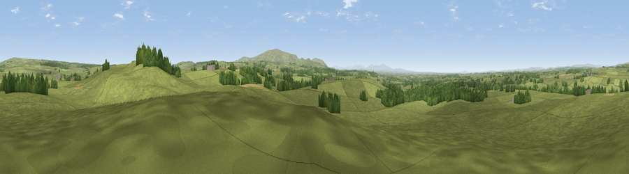

Viewpoint near Low Row
#10374 in England · top 25% of its area beats it · near Low RowThe view, rendered

A 360° render of this exact spot computed from the terrain model, tree cover and land cover — summer colours, afternoon light, calibrated against photographs of famous viewpoints. Real trees, hedges and buildings will differ in detail.
The panorama
Grey silhouette: terrain skyline in each direction (720 bearings, Earth curvature and refraction included). Dashed green: skyline with trees (+15 m) and buildings (+8 m) as obstacles. Blue strip: how far the ground is visible on each bearing.
Where the view opens
Wedge length = distance to the farthest visible ground on that bearing (vegetation-aware). Rings at 10, 25 and 50 km.
What fills the view
89% grassland · 9% woodland · 2% cropland
Angular shares of the visible panorama (visual magnitude), not map area. Landscape diversity 0.18 (0–1 Shannon).
Key numbers
More beautiful places nearby
The staircase of upgrades: each row has a higher view potential than everything closer. Driving times are estimates from straight-line distance, calibrated against real road routing — check an actual route before setting out.
| Place | Direction | Drive | Score |
|---|---|---|---|
| Viewpoint near Low Row | SE · 5 km | ~10 min | 67.5 |
| Viewpoint near Bewcastle | N · 6 km | ~13 min | 73.2 |
| Whinny Fell | S · 8 km | ~17 min | 74.2 |
| Viewpoint near Farlam | S · 9 km | ~18 min | 76.5 |
| Viewpoint near Castle Carrock | S · 11 km | ~22 min | 76.9 |
| Viewpoint near Bewcastle | N · 13 km | ~24 min | 78.9 |
| Viewpoint c11644_7156 | N · 16 km | ~29 min | 80.8 |
| Barrock Fell | SSW · 21 km | ~35 min | 81.1 |
54.98466, -2.68167 · source: screening · position refined by local search. Computed location — check access rights before visiting.